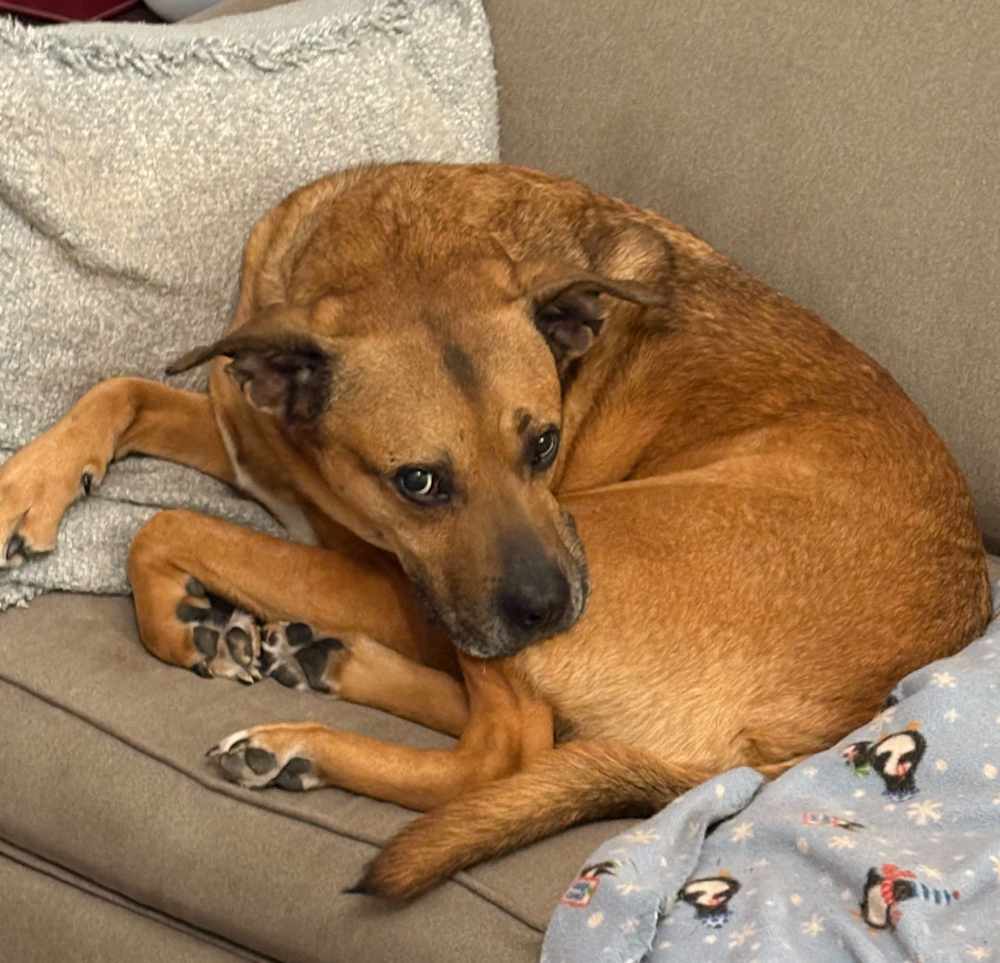

About
I am the data/graphics editor at POLITICO, where I lead visual and data journalism across coverage areas including investigations, policy and campaigns. I have more than a decade of experience in data-driven reporting and visualization.
At POLITICO, I have edited and contributed to reporting including investigations into Biden's Billions, the changing demographics of Black voters and assessing states' response to the Covid-19 pandemic.
Before POLITICO, I worked as a data reporter at NPR and CQ Roll Call. I also worked at the Scripps Howard Foundation Wire in Washington, D.C., where I taught and edited multimedia work for interns. Earlier, as a USA Today collegiate correspondent, I covered higher education, politics and culture.
I have taught data journalism at American University and Northwestern University, and trained journalists in Egypt and Tunisia. I am a graduate of Cal Poly San Luis Obispo and an inductee in the journalism department's Hall of Fame.
Outside work, I'm training Brazilian jiu-jitsu, working with my rescue dog Bandit and cheering on the .

Selected Work
POLITICO
NPR
- As Western wildfires worsen, FEMA is denying most people who ask for help |
- Across the South, COVID-19 vaccine sites missing from Black and Hispanic neighborhoods |
- America's 200,000 COVID-19 deaths: Small cities and towns bear a growing share |
- As rising heat bakes U.S. cities, the poor often feel it most |
CQ Roll Call
- K Street reinvents itself in the era of Trump |
- Fact-checking Trump's claim on U.S. attacking ISIS 'much harder' |
- House challengers find fundraising success outside their districts |
- Congress is working more than average this year: Three days a week |
- 44 sitting members of Congress have accepted donations from Trump |
- House Republicans really love Chick-fil-A |
- Absences pile up for some House members seeking other offices |
- House members send mail on taxpayer's dime, vulnerable ones do it much more |
Scripps Howard Foundation Wire
USA Today
Interviews & Features
Contact
Email: seanpm92@gmail.com